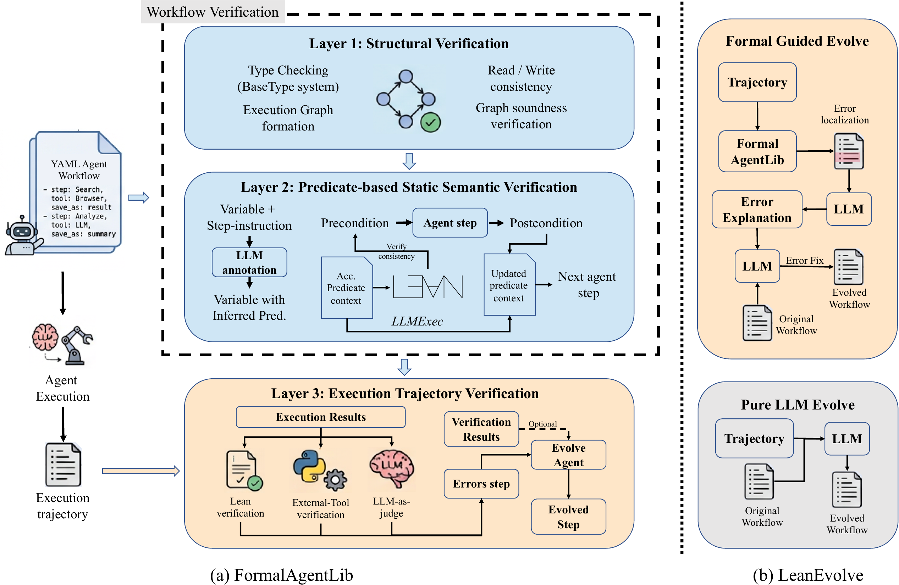

Abstract
Reliable agents need workflows that can be verified before execution and diagnosed when they fail. We introduce Lean4Agent, a framework that uses Lean4 to formally model and verify agent workflows and execution trajectories. Its FormalAgentLib provides a solid foundation for verifying workflow structure, semantic consistency, and runtime behavior. Building on the verification results, LeanEvolve revises workflows to address localized failures. Across five leading models, verification-passing workflows outperform failing ones on software engineering and AI paper understanding tasks. On the SWE-Bench-Verified hard subset, they gain 14.80% on average; LeanEvolve adds a further 7.47% through workflow refinement and reruns. This formal workflow foundation also supports our related Lean4AgenticRL project, which brings verifiable process rewards to agent training.
Methodology

Structural and semantic workflow verification. FormalAgentLib represents the agent workflow as a typed graph. Static Structural Layer verifies graph connections, node reachability, and read/write consistency. Static Semantic Layer expresses each step through preconditions and postconditions using our semantic predicate system, verifying whether earlier steps's combined post-conditions can satisfies the need for the current steps.
Execution-trajectory verification. Dynamic Verification Layer verifies what actually happened in the execution trajectory. Lean evaluates formal predicates, external validators check properties outside Lean, and semantic judges assess natural-language requirements. This combination identifies violated conditions and the steps associated with them, giving the agent concrete diagnostics about where execution departed from the intended workflow.
Formal-guided workflow refinement. LeanEvolve uses trajectory diagnostics and optional environment feedback to revise the workflow around a failed step, then reruns the updated workflow. On SWE tasks, test results guide this process, and a pure-LLM refinement add-on provides another attempt when needed.
Experimental Results
Main Results
Verification-passing workflows outperform failing ones for every evaluated model on both evaluated tasks. On the hard 50 problems subset of SWE-Bench-Verified, the average gap is 14.80%. LeanEvolve raises cumulative SWE success by another 7.47% on average.
| Model | SWE-Bench-Verified | ELAIP-Bench | |||
|---|---|---|---|---|---|
| Failed | Passed | + LeanEvolve | Failed | Passed | |
| GPT-5.2 | 50.00% | 62.67% | 70.67% | 20.33% | 32.00% |
| GLM-5 | 50.67% | 58.00% | 62.67% | 25.00% | 37.33% |
| Kimi-K2.5 | 46.00% | 61.33% | 70.00% | 28.33% | 36.00% |
| Gemma-4-31B | 32.67% | 60.00% | 65.33% | 27.33% | 35.67% |
| Qwen-3.5-27B | 38.00% | 49.33% | 60.00% | 36.67% | 42.00% |
Passed / Failed refer to Layer-2 semantic verification of the workflow specification, not whether an individual task was solved. Scores average three workflows in each group.
Evaluation. SWE uses a 50-problem hard subset of SWE-Bench-Verified; ELAIP uses a 100-question subset for AI paper understanding. These are subset evaluations, not full-benchmark leaderboard scores.
BibTeX
@misc{wang2026lean4agent,
title={Lean4Agent: Formal Modeling and Verification for Agent Workflow and Trajectory},
author={Ruida Wang and Jerry Huang and Pengcheng Wang and Xuanqing Liu and Luyang Kong and Tong Zhang},
year={2026},
eprint={2606.06523},
archivePrefix={arXiv},
primaryClass={cs.AI},
url={https://arxiv.org/abs/2606.06523},
}